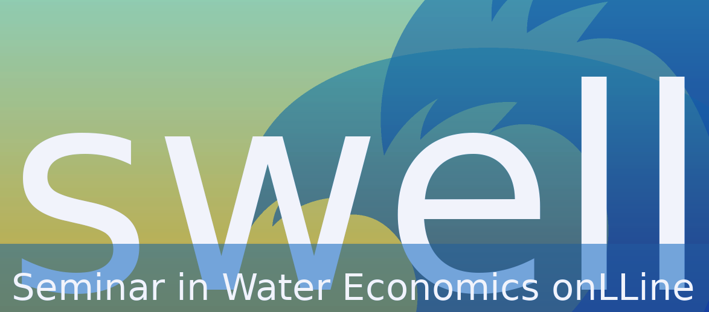
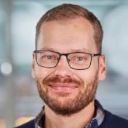
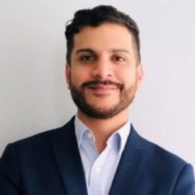
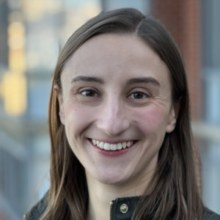

 SWELL is an online academic seminar series for everyone interested in water economics, organized by Erik Ansink (Vrije Universiteit Amsterdam) and Roy Brouwer (University of Waterloo).
To receive information about SWELL seminars, including Zoom URLs, please register using this form. Inquiries can be sent by email to Erik Ansink.
Presentations follow a standard academic 30-minute format plus 15 minutes moderated discussion. Seminars take place on Zoom, Tuesdays at 11.00AM Eastern Time (5.00PM Central European Time). Exceptions, if any, are indicated in the schedule below.
Other online seminar series that may interest you: OARES, LEEPout, OSWEET, and SWEEEP.
|  | Steve Berggreen
(Lund U)
"Waterborne diseases and children's learning" |
| Justin Leroux
(HEC Montreal)
"Accounting for needs when sharing costs" |
|
|  | Ben Solis
(IADB)
"Access to water and COVID-19: A regression discontinuity analysis for the peri-urban areas of metropolitan Lima, Peru" |
|  | Gretchen Sileo
(Georgetown U)
"Proactive and reactive infrastructure investment" |
| 2023 |
| Aaron Hrozencik
(USDA-ERS)
"Social comparisons and groundwater use: Evidence from Colorado and Kansas" |
| Ammazia Hanif
(U of Tsukuba)
"The benefit of clean water on child health: An empirical analysis with specific reference to E. Coli water contamination" |
| Emily Pakhtigian
(Penn State U)
"Early warning systems, mobile technology, and cholera aversion: Evidence from rural Bangladesh" |
| 2022 |
UC Riverside "Integrating ecosystem benefits for sustainable water allocation in hydroeconomic modeling" |
Tilburg University "An egalitarian solution to share an international river: characterization and noncooperative foundations" |
Iowa State University "Adapting to disasters: Evidence from drought in Brazil" |
University of North Carolina at Chapell Hill "Which consumers consult their water bill? Evaluating knowledge, expectations, and user type as factors of information search in Costa Rica" (Download paper) |
Tufts University "Unintended consequences of sanitation: Negative externalities on water quality and health in India" |
University of Oregon "Direct and downstream health effects of pesticides: Evidence from the U.S. rollout of genetically modified crops and glyphosate" |
University of Florida "Quantifying co-benefits of water quality policies: An integrated assessment model of land and nitrogen management" (Download paper) |
| 2021 |
University of New Mexico "Refilling the Salton Sea to improve public health? An integrated hydro-agri-health economic analysis" |
Environmental Defense Fund "Information campaign on water quality and marriage market: The case of arsenic exposure in rural Bangladesh" (Download paper) |
University of Zürich "Beware of side effects? Spillover evidence from a hot water intervention" |
University of Zaragoza "Hydroeconomic modeling for assessing water scarcity and agricultural pollution abatement policies in the Ebro River Basin, Spain" |
University of Exeter "At what price? Evidence from a natural experiment on pricing rule effects in reverse auctions" (Download paper) |
North Carolina State University "Left in the dust? Environmental and labor effects of rural-urban water sales" (Download paper) |
Victoria University of Wellington "Water Trading among Suppliers" |
UC Berkeley "Groundwater Quality, Crop Choice, and the Cost of Sea-level Rise" |
University of Massachusetts Amherst "Groundwater, Energy, and Crop Choice" |
Delhi School of Economics "Free Power, Irrigation and Groundwater Depletion: Impact of the Farm Electricity Policy of Punjab, India" |
University of Copenhagen "A Meta-Analysis Regression of Water Quality Valuation in the Nordic Countries: A New Tool for Applied Benefit Function Transfer" |
Temple University "The Local Benefits of Federal Mandates: Evidence from the Clean Water Act" |
Hebrew University of Jerusalem "Large-Scale Desalination and the External Impact on Irrigation-Water Salinity: Economic Analysis for the Case of Israel" |
University of Florida "Water Supply Planning in the U.S. Third Most Populous State - Florida " |
| 2020 |
University of Chicago "The Texas Grand Slam: Robbed by Red Tides?" |
Texas A&M University at Galveston "What Drives Voluntary Buyouts of Floodplain Properties: Empirical Evidence from U.S. Counties" (Download paper) |
Athens University of Economics and Business "Managing Transboundary Waters under Climate Uncertainty" |
University of Girona "On the Social Organization of the Commons - An Analytical Framework" (Download paper) |
International Food Policy Research Institute (IFPRI) "Irrigation-Nutrition Linkages in Sub-Saharan Africa: Lessons from small scale irrigations in Ethiopia, Ghana, and Tanzania" |
West Virginia University "The Impact of Public Water Supply Unreliability on Residential Property Prices in Marion County, West Virginia" (with Fahad Alzahrani) |
Cornell University "Water Affordability in the United States" (with Casey Wichman) |
University of North Carolina at Chapel Hill "Higher than you think: the Invisible Costs of Water and Sanitation Services Embedded in Housing" (Download paper) |
Toulouse School of Economics "Social Norms Information Treatments in the Municipal Water Supply Sector" (with Dale Whittington) |
Technical University of Munich "Agricultural Productivity and Weather Variability: A Study of Small Irrigation Development Program in Ethiopia" (with Marup Md. Hossain and Alessandra Garbero) |
Duke University "The Economic Impacts of Large-Scale Water Infrastructure Improvements in Urban Zarqa, Jordan" (with Jennifer Orgill and Seth Morgan) |
University of Chicago "Rationing the Commons" (with Nicholas Ryan) |
University of Oviedo "Do Households Have Enough Information for Adequate Decision-Making in the Water Sector? A Case Study in Spain" (with Marta Suárez-Varela and Roberto Martínez-Espiñeira) |
Free University of Bozen-Bolzano "Water Tariffs and Consumers' Inaction" (with Carmine Ornaghi) |
Pennsylvania State University "Do Nonlinear Prices Work? Distributional and Conservation Consequences of Budget-Based Water Rates" (with Casey Wichman and Derek Wietelman) |
University of Kassel "Do International Agreements Improve Water Quality in Rivers?" |
University of Texas at Austin "The Value of Water Quality: Estimating Amenity and Recreational Benefits" (with Yusuke Kuwayama and Jiameng Zheng) WED May 6 |
North Carolina State University "Global Groundwater Governance: Economic Framework and Cross-Country Comparison" (with Todd Guilfoos) |